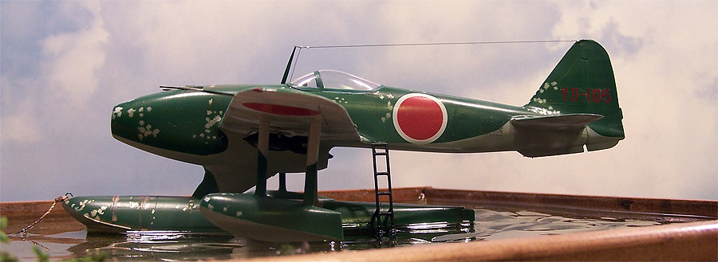

Kit Bashing a “Bandora”

Images and text Copyright © 2010 by Matt Swan
The advanced German submarine U-234 made an attempt in 1945 to deliver a cargo of high end, top secret technology to the Japanese Empire which never made it to port. Within this cargo were complete technical drawings and examples of the Junkers Jumo 004 turbo jet engine. What did make it into Japanese hands was a currier package with a single drawing and a couple black and white pictures of a Jumo 004 engine. With only these small clues by wars end Japanese engineers had brought the Nene turbojet engine to a test flight level, an amazing achievement in and of itself.
What if that shipment of technological goods had made it to its intended destination? What if the Japanese Empire had perfected the Nene turbojet engine and possibly pushed it to a second generation production model? What if this engine was incorporated into a new Mitsubishi point defense interceptor or reconnaissance aircraft? What if (like the Zero or the George) this type of aircraft was converted to a float plane for use on the small Pacific islands? What if, because of hurried production requirements and weight restrictions, these aircraft did not received the undercoating typical of IJN aircraft and were instead treated like IJA aircraft? How would this impact the look of the aircraft after maybe only a short time in the South Pacific? These are the kinds of questions that rattle around my head when there is nothing else to keep my mind occupied (it’s a dangerous place). Here is my answer to that string of questions, the Mitsubishi N2M2-E Aewun Allied code name "Bandora".
Let’s take a quick look at this code designation N2M2-E;
N - Float Fighter
2 - 2nd type IJN adopted (after N1K Kyofu)
M - Designed by Mitsubishi
2 - 2nd major revision
E - Reconnaissance version
(Thanks to What If modeler RedStar72 for the designation and explanation)
With the project being handed over to Mitsubishi we will incorporate the classic A6M2 Zero wing and tail structure but to house a single turbojet engine I think something along the lines of what Yakovlev did with the captured German jet technology would be more appropriate so let’s add some Yak 15 flavor into the mix. Filling these requirements is actually pretty easy; the Nakajima A6M2-N Ruff is simply a float plane version of the Mitsubishi Zero and is readily available from Tamiya. Czech Models has the Yak-15 on the market and both kits are well priced for kit-bashing. Now it is just a matter of some hard core surgery and putty work to bring these two aircraft together!
You may click on any small image within this article to view larger pictures
Aircraft Construction
 The first order of business is to lay out the parts from both kits and see where the most opportune places are to cut the fuselage and how much work is going to be needed to fit the wings. As it turns out the wings are nearly a perfect fit with only a little stressing needed to widen the root cord a bit and some slight beveling at the trailing edge. The fuselage needs a little more attention however by placing the cut line at a little bit of an angle I can achieve a fair match. It’s going to need putty and grinding but the profile of the two fuselages are pretty close.
The first order of business is to lay out the parts from both kits and see where the most opportune places are to cut the fuselage and how much work is going to be needed to fit the wings. As it turns out the wings are nearly a perfect fit with only a little stressing needed to widen the root cord a bit and some slight beveling at the trailing edge. The fuselage needs a little more attention however by placing the cut line at a little bit of an angle I can achieve a fair match. It’s going to need putty and grinding but the profile of the two fuselages are pretty close.
The first major hurdle is combining a slightly square Yak fuselage with an oval Nakajima fuselage. This required a bit of heavy grinding to the Yak fuselage corners and then some putty to build up the side curvature. Since plastic was getting a little thin in places I beefed up the interior with a couple layers of Bondo glazing putty. At the time that I started this project and painted the interior I was off work for some surgery on my jaw. This meant I had a goodly supply of Vicodin which may have slightly influenced the design of this build. In fact I call that interior cockpit color Vicodin Blue. The cockpit is mostly the resin stuff from the Yak kit however I did add some side panels and a selection of photo etched handles from the spares box.
When attaching the wings I stuffed a few spacers inside the wing chord to fatten the wings a little which made for a good fit to the fuselage. This was followed by several days of puttying and sanding. I used Bondo automotive body glazing for the large fills then finished things with Mr. Surfacer 500. The main float pylon was cut down to accommodate the jet engine and the fuselage was drilled out to fit the aft support pylons. It was suggested that the outrigger floats should have more support to handle the higher landing and takeoff speeds so I added V aft support struts made from Aeroclub strut material.
I repositioned the nose cannons bringing them closer together and somewhat higher up on the fuselage than they were on the Yak. I had just finished building my Kagero 1/350 ship kit before starting this build and had a pair of leftover brass barrels for the five inch guns – these worked perfectly for the cannon barrels on this build. Next things get masked off for paint.
I wanted to chip the finish up severely on this build and used table salt for that effect. As described in my article on Salt Chipping the model was painted with Alclad aluminum then table salt crystals were attached to the surface. For the final colors I elected to use White Ensign paints as I feel they offer the best possible color matches for IJN and IJA colors in enamel paints. The paint quality is also very good. I did the model in Mitsubishi Navy Green over Mitsubishi Navy Gray. After the top colors had set I mixed some of the green with a few drops of white and sprayed the central areas of the panels for some sun fade.
Usually I paint the lower surfaces then the uppers but for some odd reason (probably Vicodin related) I reversed the process on this build. It actually worked out better as I was able to quickly remove the salt then mask for the gray. I did not spend a lot of time on weathering the lower surfaces as this model was going to be embedded in a resin base and the lower surfaces would be very difficult to see. I did a little preshading with flat black before shooting the gray and that was about it.
After painting the model was sealed with Future and decals from the Rufe kit were used. I had to apply these with a dip in Future to prevent silvering. Another coat of Future sealed the kit and a wash was applied. Following this I tried some dot filtration weathering which is where you add small spots of concentrated acrylic paste then wipe them down with a damp tissue. It did help to dirty things up but I know I need more work in this area. The canopy was added and a mast/aerial was placed. This finishes the aircraft half of the build.
Base Construction
I have never modeled water. I have always wanted to but never had the balls to attempt it. Today I’m jumping into the deep end. First I needed a board that was large enough to fit the model but not so large as to be cost prohibitive when I started pouring clear resin. I selected a piece of chipboard about 10 inches by 14 inches. I picked up a piece of 2 inch wood trim board and cut it to make a frame around the base board. Small brad nails held everything together. This was stained then sealed with a couple coats of clear polyurethane. After drying for a day I cut a couple pieces of Styrofoam to form the basis of my beach and glued it to the inside base. Now I mixed a batch of Cellu-clay colored with some Burnt Umber paint and covered the entire base. This needed several days to set up before I could continue.
Next I painted a coat of white glue across the entire base and covered it with buff model railroad ballast to replicate sand, more drying time. I went to my local craft store and purchased some plastic ferns. From these I cut off small leaves which were superglued to the sand covered base forming scale ferns. Some green moss and a few chips of bark were also attached creating a dry base for my diorama.
For my water I used Easy Cast clear casting resin and it cost me about $50 just for the resin so be ready for this if you are going to build a water diorama. I began with a small amount, maybe three cups, of two part casting resin and mixed in a healthy amount of green and brown acrylic water color paste. This was poured to create the illusion of depth. It was at this point that I realized I had done nothing to seal the seams of the base and resin leaked. Fortunately my woodwork was pretty tight and not much resin was lost. It took about six hours for this pour to set up completely. During all the waiting for things to cure and dry I found some charm bracelet fish that were easily modified and painted to fit the dio.
This is how things looked right after the first pour. With the long cure time it gives the resin plenty of time for the bubbles to get out. Once this had cured I superglued the fish to the top of the first pour. The second pour was about the same amount of resin with only a small amount of green color added to it and was just enough to cover the top of the fish. Once this was poured I then suspended the model over the base using various blocks and rulers to support it. I let just the bottom of the main float enter the uncured resin then let things sit undisturbed for the night. By morning the aircraft was secure in the base. Now for the final pour. This time I’m using about a half gallon of clear resin with no color added. With this pour I had to be careful that I did not drip any resin on the model or drag any strings of resin across things. Because this pour was so much larger the cure time in now measured in days rather than hours. However after about six hours the resin was thick enough that I was able to work the surface with a butter knife making large swirls and dips into the gooey resin. The resin would try to flow back into these impressions but being as thick as it was could not completely return to level giving me a gentle wave action to the surface. By morning the surface was still slightly tacky and it took several days before things were rock hard.


 The first order of business is to lay out the parts from both kits and see where the most opportune places are to cut the fuselage and how much work is going to be needed to fit the wings. As it turns out the wings are nearly a perfect fit with only a little stressing needed to widen the root cord a bit and some slight beveling at the trailing edge. The fuselage needs a little more attention however by placing the cut line at a little bit of an angle I can achieve a fair match. It’s going to need putty and grinding but the profile of the two fuselages are pretty close.
The first order of business is to lay out the parts from both kits and see where the most opportune places are to cut the fuselage and how much work is going to be needed to fit the wings. As it turns out the wings are nearly a perfect fit with only a little stressing needed to widen the root cord a bit and some slight beveling at the trailing edge. The fuselage needs a little more attention however by placing the cut line at a little bit of an angle I can achieve a fair match. It’s going to need putty and grinding but the profile of the two fuselages are pretty close.

{kind=link}
{kind=link}
{kind=link}
{kind=link}
{kind=link}
{kind=link}
{kind=link}
{kind=link}
{kind=link}
{kind=link}
{kind=link}
{kind=link}
{kind=link}
{kind=link}
{kind=link}
{kind=link}
{kind=link}
{kind=link}